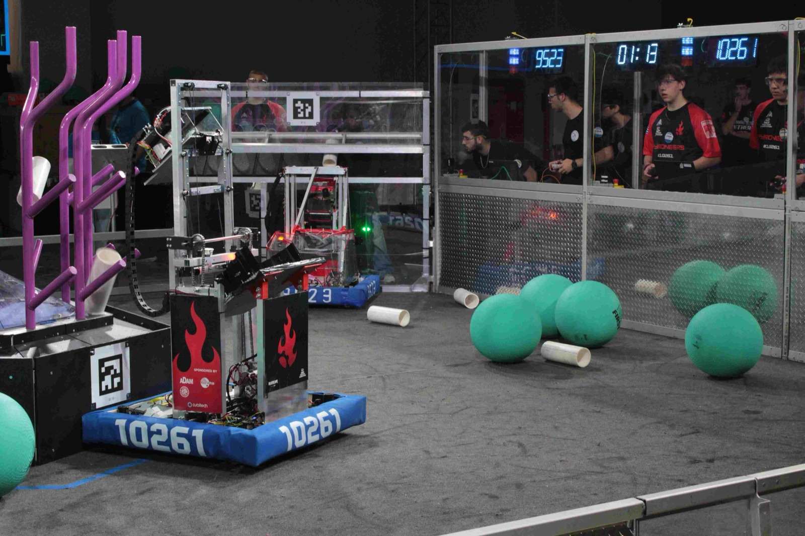
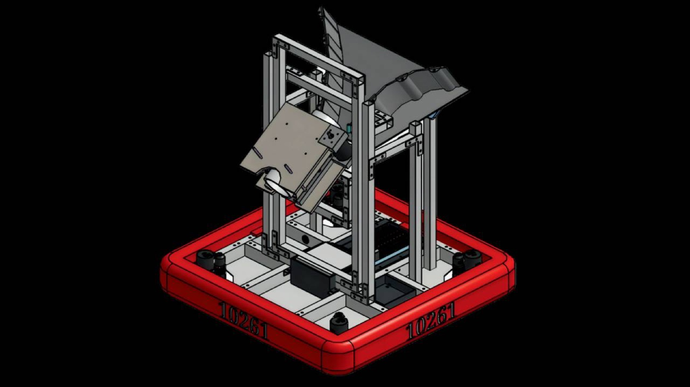
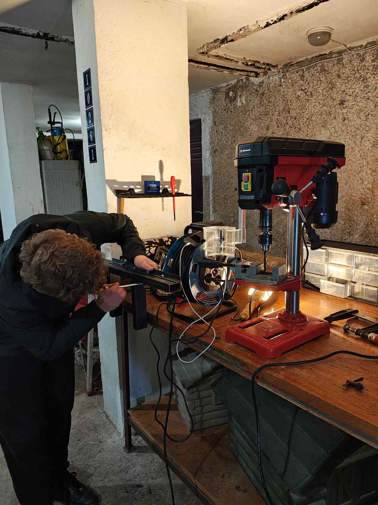
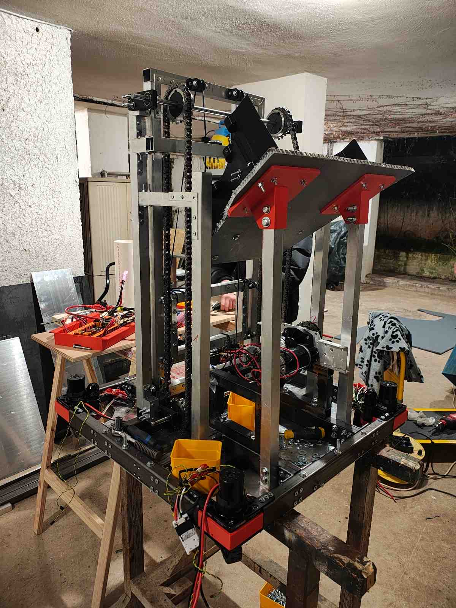
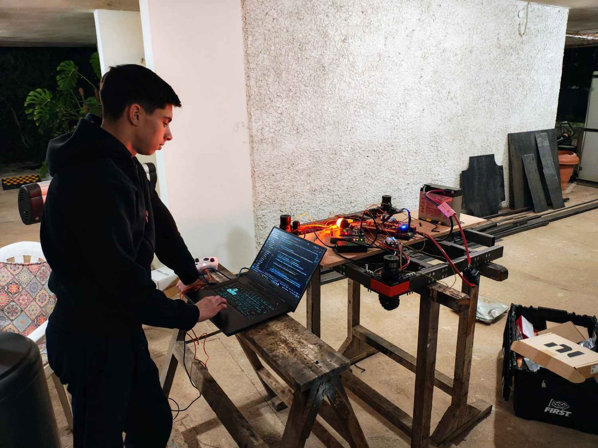
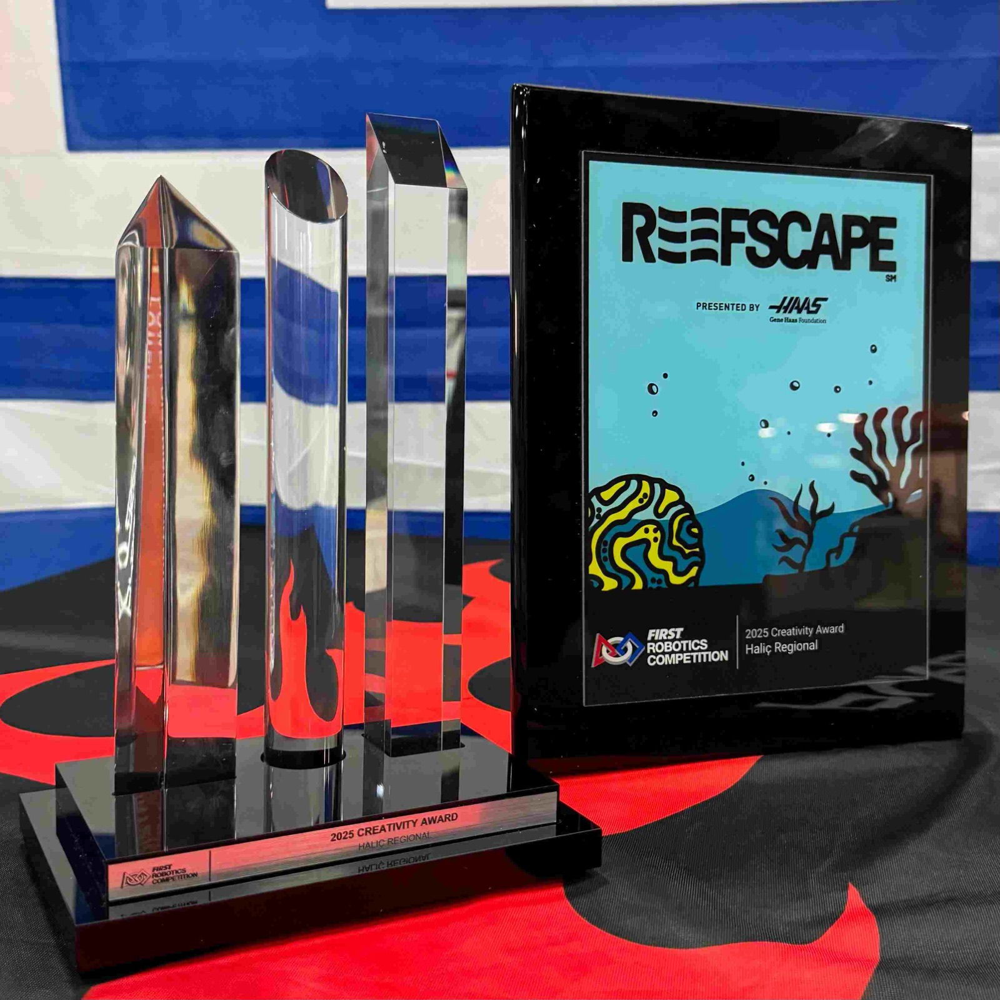
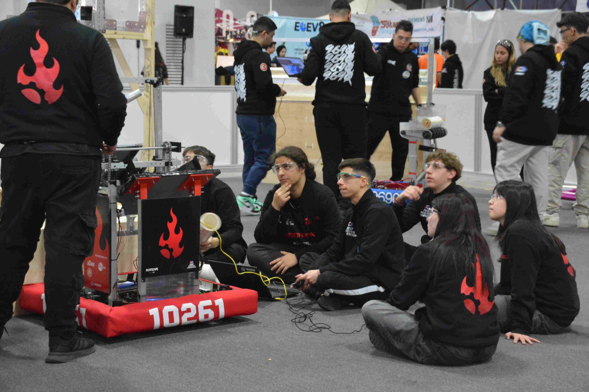
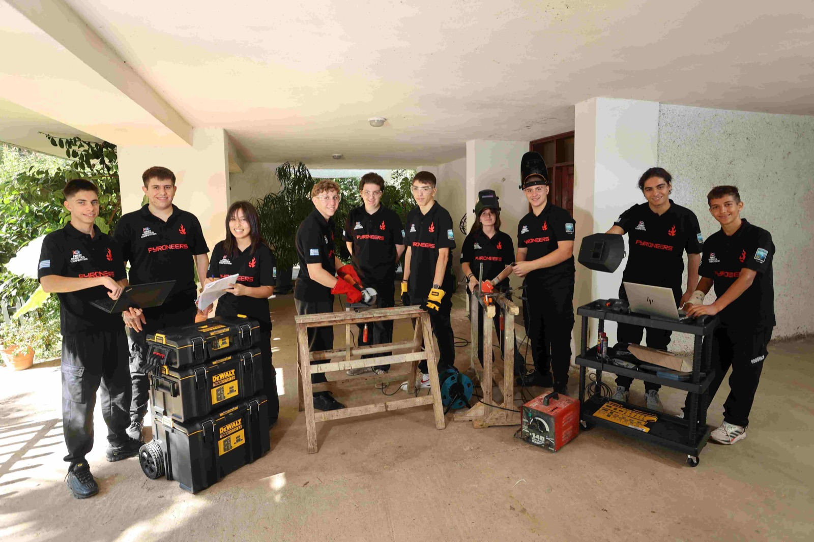

Season 1 · 7–9 March 2025
Haliç Regional, Istanbul
- Award
- Creativity Award
sponsored by Rockwell Automation - Rank
- 39 of 50 after qualification matches
- Record
- 4 wins, 5 losses
- Playoffs
- Not selected
I’m Iasonas Andreadis. In July 2024, six friends and I started Pyroneers to bring the FIRST Robotics Competition to Greece. Our first robot, Hephaestus, won the Creativity Award at the Haliç Regional in Istanbul in March 2025. I worked on the code, the CAD and finding sponsors.

Most of us met through FIRST LEGO League as kids. I was on the team that placed 2nd at the Western Edge FIRST LEGO League Open in California in 2023, and in 2024 I was on Greece’s national team at the FIRST Global Challenge in Athens.
The FIRST Robotics Competition is the biggest of the FIRST programs, but no Greek team had ever entered it. In the summer of 2024, seven of us decided to try. It wasn’t one person’s idea. We were friends first and a team second. The name started as a joke on “Pioneers”, with “pyro” for the spark, and our logo is a flame and a gear.
We started as an independent team, not a school club, with no big company behind us. Three adult coaches, aged 19 to 20, helped us: Antonis Lekkas, Vasilis Gkizas and Stathis Konstantinou. Our parents drove us, found materials and helped find space. Our families gave us a heated workshop. The 2025 game, REEFSCAPE, was announced in early January 2025, and we had two months to design, build and program the robot before Istanbul.

The robot had four mechanisms: a swerve drivetrain, a custom lift, a passive intake and an outtake. The judges’ citation for the Creativity Award pointed to the intake, which was a simple, cheap solution.
| Season | 2025, REEFSCAPE |
|---|---|
| Build time | 2 months |
| Cost | About €6,000 |
| Weight | 51 kg |
| Size | 75 × 75 × 102 cm |
| Drivetrain | MAXSwerve |
| Mechanisms | Swerve drive, custom lift, passive intake, outtake |
| Motors (11) | 4 NEO Vortex (drive) · 4 NEO 550 (swerve) · 2 CIM (lift) · 1 NEO (outtake) |
| Code | Java, WPILib |
| Vision | Raspberry Pi 5, Pi Camera v3, PhotonVision |
| CAD | Onshape |




Photos: Pyroneers team site.
Match results and ranks are from FIRST’s official event records. Robot cost, weight and build time are the team’s own figures. Rankings come from matches played with randomly assigned alliance partners. The Creativity Award is a judged award.


The judges singled out our passive intake because it was simple and cheap. With two months and €6,000, a mechanism with fewer parts to break was worth more to us than one that did more.
Because each mechanism was designed as its own module, the code could be written while the robot was still being built. With a two-month window, that let the code and the hardware move forward at the same time.
In 2025 we won a top judged award and ranked 39 of 50 in matches. In 2026 we ranked 31 of 33 and won nothing. Good design doesn’t automatically make a robot win matches, and I try not to describe one as the other.
Sponsors paid for every part of the robot. Finding them was part of the engineering work, because without them there was nothing to build.
Western Edge FIRST LEGO League Open, Long Beach, California: 2nd overall and 2nd in the Robot Game with team iRobot.Before Pyroneers · my team
FIRST Tech Challenge Greece, CENTERSTAGE season: Motivate Award (1st) and Design Award (2nd) with team 24966 Suited Penguins.Before Pyroneers · my team
Seven of us start Pyroneers in Athens.
FIRST Global Challenge in Athens. I compete on Greece’s national team.Me, separate from Pyroneers
Ta Nea reports that Pyroneers is the first Greek team accepted into FRC.
The REEFSCAPE game is announced. Two-month design and build begins.
Haliç Regional, Istanbul. Greece’s first FRC event: Creativity Award, rank 39 of 50.
Team members meet the Minister of Digital Governance and the then Minister for Social Cohesion and Family to talk about funding and equipment for Greek robotics teams.
Bosphorus Regional with our second robot: rank 31 of 33.
I’m not competing this season, after two seasons on the team.
The Creativity Award went to the whole team, not to me. I wasn’t on the FTC team that won Greece’s 2024 FTC championship, which some press about Pyroneers mentions.